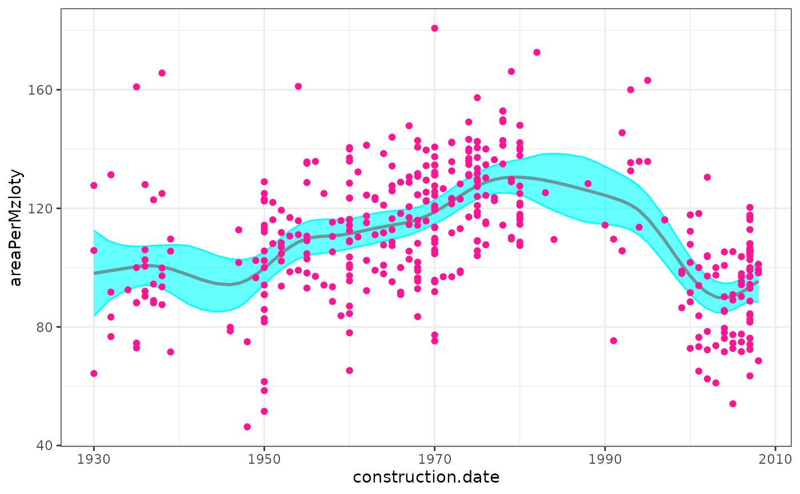
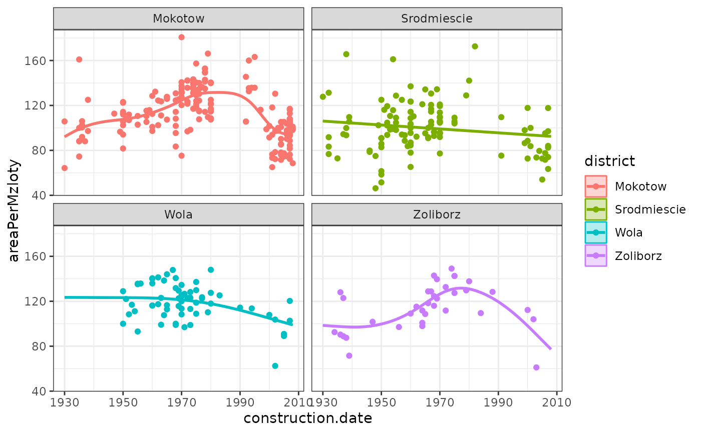
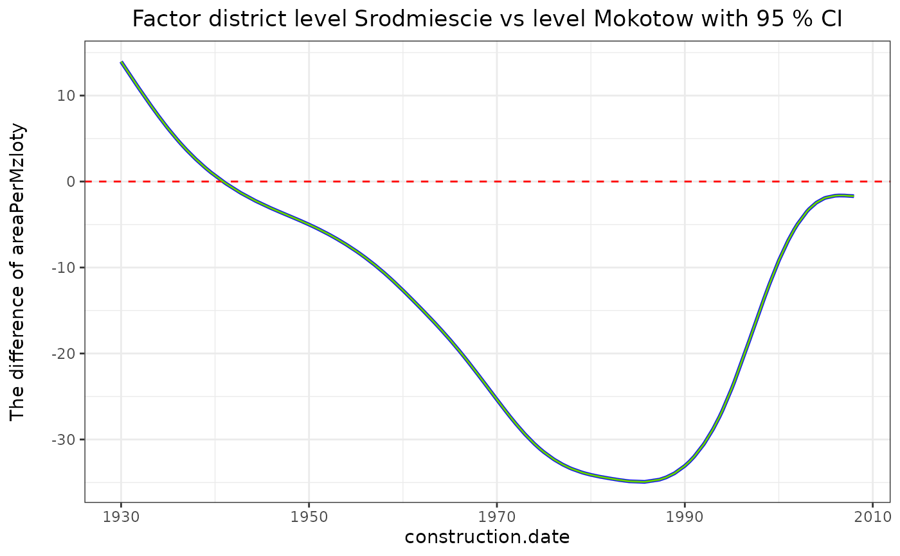
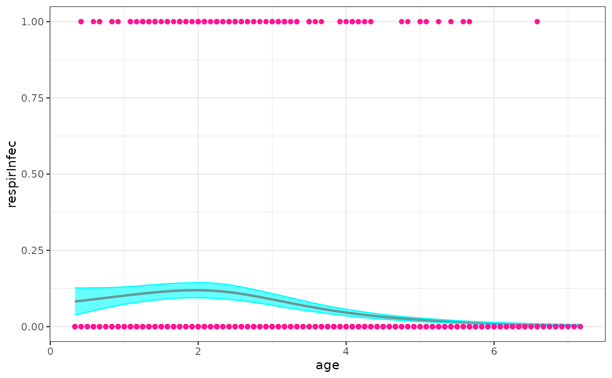
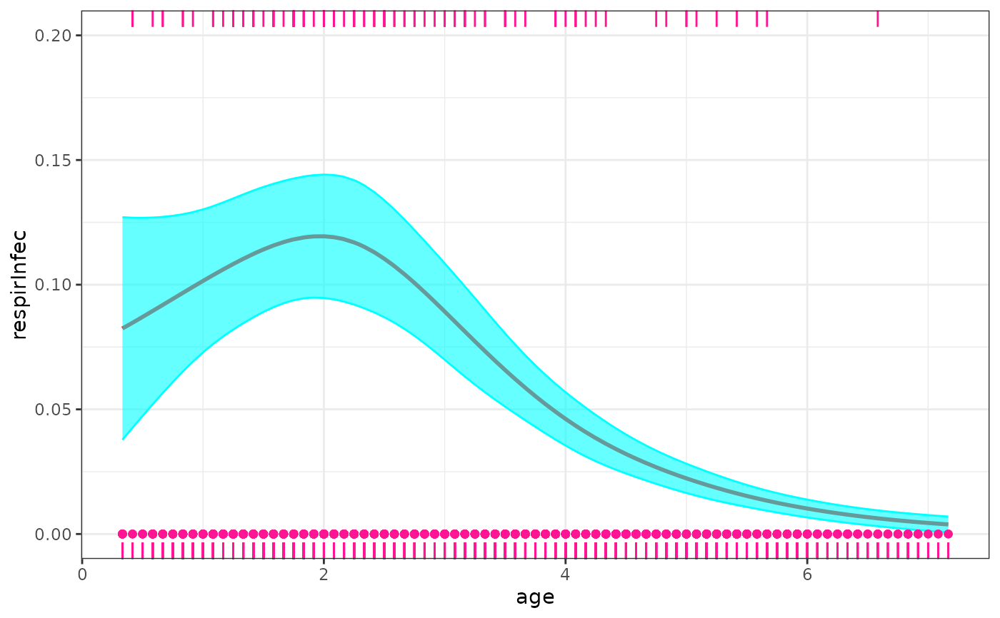

Fit a semi parametric model based on glmmTMB.
Usage
semireg_tmb(formula, data, family = gaussian(), smoothZ = list(), ziformula = ~0,
dispformula = ~1, weights = NULL, offset = NULL, contrasts = NULL, na.action,
se = TRUE, verbose = FALSE, doFit = TRUE, control = glmmTMBControl(),
REML = TRUE, start = NULL, map = NULL, sparseX = NULL, prt=TRUE,
predict_info=TRUE)Arguments
- formula
A two-sided linear formula object describing both the fixed-effects and random-effects part of the model, with the response on the left of a ~ operator and the terms, separated by + operators, on the right. Random-effects terms are distinguished by vertical bars ("|") separating expressions for design matrices from grouping factors.
- data
data frame (tibbles are OK) containing model variables. Not required, but strongly recommended; if
datais not specified, downstream methods such as prediction with new data (predict(fitted_model, newdata = ...)) will fail. If it is necessary to callglmmTMBwith model variables taken from the environment rather than from a data frame, specifyingdata=NULLwill suppress the warning message.- family
a family function, a character string naming a family function, or the result of a call to a family function (variance/link function) information. See
familyfor a generic discussion of families orfamily_glmmTMBfor details ofglmmTMB-specific families.- smoothZ
A list includes a set of smooth Z matrixs (called 'smooth term') used in the mixed effects model, the name of 'smooth term' should be different any variables in the model, each 'smooth term' is the result of function
smZ. e.g. smoothZ=list(sm1=smZ(x1), sm2=smZ(x2, by=f1), sm3=smZ(x3, by=f2, group=TRUE), ...) where 'sm1' to 'sm3' should be new variable names in thedata, and x1 to x3 are covariates, and f1, f2 are factors.- ziformula
a one-sided (i.e., no response variable) formula for zero-inflation combining fixed and random effects: the default
~0specifies no zero-inflation. Specifying~.sets the zero-inflation formula identical to the right-hand side offormula(i.e., the conditional effects formula); terms can also be added or subtracted. When using~.as the zero-inflation formula in models where the conditional effects formula contains an offset term, the offset term will automatically be dropped. The zero-inflation model uses a logit link.- dispformula
a one-sided formula for dispersion containing only fixed effects: the default
~1specifies the standard dispersion given any family. The argument is ignored for families that do not have a dispersion parameter. For an explanation of the dispersion parameter for each family, seesigma. The dispersion model uses a log link. In Gaussian mixed models,dispformula=~0fixes the residual variance to be 0 (actually a small non-zero value), forcing variance into the random effects. The precise value can be controlled viacontrol=glmmTMBControl(zero_dispval=...); the default value issqrt(.Machine$double.eps).- weights
weights, as in
glm. Not automatically scaled to have sum 1.- offset
offset for conditional model (only).
- contrasts
an optional list, e.g.,
list(fac1="contr.sum"). See thecontrasts.argofmodel.matrix.default.- na.action
a function that specifies how to handle observations containing
NAs. The default action (na.omit, inherited from the 'factory fresh' value ofgetOption("na.action")) strips any observations with any missing values in any variables. Usingna.action = na.excludewill similarly drop observations with missing values while fitting the model, but will fill inNAvalues for the predicted and residual values for cases that were excluded during the fitting process because of missingness.- se
whether to return standard errors.
- verbose
whether progress indication should be printed to the console.
- doFit
whether to fit the full model, or (if FALSE) return the preprocessed data and parameter objects, without fitting the model.
- control
control parameters, see
glmmTMBControl.- REML
whether to use REML estimation rather than maximum likelihood.
- start
starting values, expressed as a list with possible components
beta,betazi,betad(fixed-effect parameters for conditional, zero-inflation, dispersion models);b,bzi(conditional modes for conditional and zero-inflation models);theta,thetazi(random-effect parameters, on the standard deviation/Cholesky scale, for conditional and z-i models);psi(extra family parameters, e.g., shape for Tweedie models).- map
a list specifying which parameter values should be fixed to a constant value rather than estimated.
mapshould be a named list containing factors corresponding to a subset of the internal parameter names (seestartparameter). Distinct factor values are fitted as separate parameter values,NAvalues are held fixed: e.g.,map=list(beta=factor(c(1,2,3,NA)))would fit the first three fixed-effect parameters of the conditional model and fix the fourth parameter to its starting value. In general, users will probably want to usestartto specify non-default starting values for fixed parameters. SeeMakeADFunfor more details.- sparseX
a named logical vector containing (possibly) elements named "cond", "zi", "disp" to indicate whether fixed-effect model matrices for particular model components should be generated as sparse matrices, e.g.
c(cond=TRUE). Default is allFALSE- prt
Logical scalar - Should the info to be print on screen in the middle of the process or not?
- predict_info
Logical scalar - Should provide the info for function semipred or not? In case of there is a correlation theta parameter appearing, you may set predict=FALSE.
Value
- semer
A glmmTMB model used in the fitting.
- data
A data.frame with generated variables in the fitting.
- fomul_vars
Name of variables in the formula of semireg_tmb model.
- sm_vars
Name of variables in the smoothZ list.
- smoothZ_call
A call used to produce smooth terms in the fitting.
- knots_lst
Knots used in each smooth term in the fitting.
- range_lst
Range of covariate used in each smooth term in the fitting.
- cov_lst
Covariance matrix list for each smooth term.
- u_lst
Random effects list for each smooth term.
- type_lst
Smooth type list of smooth terms.
- CovMat
Covariance matrix for all smooth terms.
- Cov_ind
Covariance matrix index for each smooth term.
- Cov_indN
Covariance matrix index for each smooth term when
group=TRUEinsmoothZargument.- df
Degree of freedom of all random terms.
- tmbf
The glmmTMB model result using doFit=FALSE.
Details
A semi parametric model can be parameterized as a linear (or generalized linear) mixed model in which its random effects are smooth functions of some covariates (named <e2><80><98>smooth term<e2><80><99>). semireg_tmb follows the approach suggested by Wand and Ormerod (2008) and represents the 'smooth term' using O'Sullivan-type of Z.
References
Wand, M.P. and Ormerod, J.T. (2008). On semiparametric regression with O'Sullivan penalized splines. Australian and New Zealand Journal of Statistics. 50, 179-198.
Examples
library(predictmeans)
if (requireNamespace("HRW", quietly = TRUE)) {
data(WarsawApts, package = "HRW")
fit1 <- semireg_tmb(areaPerMzloty ~ construction.date,
smoothZ=list(
grp=smZ(construction.date, k=25)
),
data = WarsawApts)
sp_out1 <- semipred(fit1, "construction.date", "construction.date")
WarsawApts$district <- factor(WarsawApts$district)
fit2 <- semireg_tmb(areaPerMzloty ~ construction.date*district,
smoothZ=list(group=smZ(construction.date, k=15,
by = district, group=TRUE)),
data=WarsawApts)
sp_out2_1 <- semipred(fit2, "district", "construction.date")
sp_out2_2 <- semipred(fit2, "district", "construction.date", contr=c(2,1))
}
#> Formula: areaPerMzloty ~ construction.date + (1 | grp)
#> Data: WarsawApts
#> AIC BIC logLik -2*log(L) df.resid
#> 3550.889 3566.944 -1771.445 3542.889 405
#> Random-effects (co)variances:
#>
#> Conditional model:
#> Groups Name Std.Dev.
#> grp (Intercept) 1.137
#> Residual 17.785
#>
#> Number of obs: 409 / Conditional model: grp, 27
#>
#> Dispersion estimate for gaussian family (sigma^2): 316
#>
#> Fixed Effects:
#>
#> Conditional model:
#> (Intercept) construction.date
#> -19.28657 0.06521

#> Formula:
#> areaPerMzloty ~ construction.date * district + (1 | group.Mokotow) +
#> (1 | group.Srodmiescie) + (1 | group.Wola) + (1 | group.Zoliborz)
#> Data: WarsawApts
#> AIC BIC logLik -2*log(L) df.resid
#> 3554.224 3606.402 -1764.112 3528.224 396
#> Random-effects (co)variances:
#>
#> Conditional model:
#> Groups Name Std.Dev.
#> group.Mokotow (Intercept) 6.898e-01
#> group.Srodmiescie (Intercept) 3.187e-15
#> group.Wola (Intercept) 1.091e-01
#> group.Zoliborz (Intercept) 5.413e-01
#> Residual 1.756e+01
#>
#> Number of obs: 409 / Conditional model: group.Mokotow, 17; group.Srodmiescie, 17; group.Wola, 17; group.Zoliborz, 17
#>
#> Dispersion estimate for gaussian family (sigma^2): 308
#>
#> Fixed Effects:
#>
#> Conditional model:
#> (Intercept) construction.date
#> -43.32116 0.07831
#> districtSrodmiescie districtWola
#> 485.88087 776.89772
#> districtZoliborz construction.date:districtSrodmiescie
#> 282.67890 -0.25265
#> construction.date:districtWola construction.date:districtZoliborz
#> -0.39155 -0.14576


if (requireNamespace("HRW", quietly = TRUE)) {
data(indonRespir, package = "HRW")
fit3 <- semireg_tmb(respirInfec ~ age+vitAdefic + female + height
+ stunted + visit2 + visit3 + visit4 + visit5 + visit6+(1|idnum),
smoothZ=list(
grp=smZ(age)
),
family = binomial,
data = indonRespir)
sp_out3 <- semipred(fit3, "age", "age")
library(ggplot2)
print(sp_out3$plt +
geom_rug(data = subset(indonRespir, respirInfec==0), sides = "b", col="deeppink") +
geom_rug(data = subset(indonRespir, respirInfec==1), sides = "t", col="deeppink") +
coord_cartesian(ylim = c(0, 0.2)))
}
#> Formula:
#> respirInfec ~ age + vitAdefic + female + height + stunted + visit2 +
#> visit3 + visit4 + visit5 + visit6 + (1 | idnum) + (1 | grp)
#> Data: indonRespir
#> AIC BIC logLik -2*log(L) df.resid
#> 673.9676 740.1386 -323.9838 647.9676 1187
#> Random-effects (co)variances:
#>
#> Conditional model:
#> Groups Name Std.Dev.
#> idnum (Intercept) 0.7939
#> grp (Intercept) 0.4285
#>
#> Number of obs: 1200 / Conditional model: idnum, 275; grp, 8
#>
#> Fixed Effects:
#>
#> Conditional model:
#> (Intercept) age vitAdefic female height stunted
#> -0.972232 -0.500262 0.666181 -0.505897 -0.033005 0.454810
#> visit2 visit3 visit4 visit5 visit6
#> -1.107213 -0.572605 -1.275794 0.473012 -0.004682

